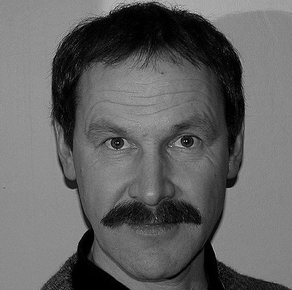

<nav class="shadow-low">
    <input type="checkbox" id="overlay-input" />
    <label for="overlay-input" id="overlay-button"><span></span></label>
    <div id="menu">
        <div>
            <a href="index.html">
                </a>
        </div>
        <h4>Arvid Steen</h4>
        <h5>
            Veterinær<br>Dr.med.vet<br>Allmenn spesialist produksjonsdyr - storfe<br>Nordøyane veterinærkontor
        </h5>
        <ul>
            <li><a id="mjolkefeber" href="mjolkefeber.html">Praktisk forebygging av mjølkefeber</a></li>
            <li><a id="ketose" href="subklinisk-ketose.html">Praktisk håndtering av skjult (subklinisk) ketose</a></li>
            <li><a id="kilder" href="kilder.html"><br>Veterinærmedisinsk litteratur</a></li>
        </ul>
    </div>
</nav>
